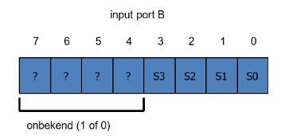
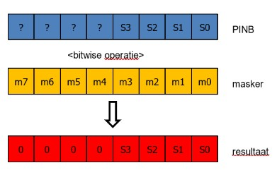

Opdracht 3: Programmeren in C op de Arduino Uno
In dit practicum oefen je met bitoperaties en met herhalings- en beslissingsstructuren in de taal C.
Inleiding
Op de Arduino Uno zijn de 8 LED’s op het shield aangesloten op output-poort D (PORTD) en de 4 schakelaars op input-poort B (PINB).
Input-poort B is een 8-bit poort, waarvan alleen bits 3..0 worden gebruikt voor de schakelaars. Bits 7..4 worden gebruikt voor andere functies van de microcontroller. De actuele waarde van bits 7..4 is onbekend. Je mag dus nooit aannemen dat deze bits altijd 0 of 1 zijn.
De waarde die van input-poort B wordt gelezen is dus:

Figuur 1. Input-poort B
Om alleen de waarde van schakelaars S3 t/m S0 in te lezen, moet je met een bitwise operatie bereiken dat bits 7..4 altijd als logische 0 worden geïnterpreteerd. Dit heet maskeren (zie figuur 2):

Figuur 2. Maskeren van input-poort B
Notitie
Tijdens de uitvoering van deze opdracht houd je een rapportage bij. Gebruik hiervoor het document Rapportage_Opdracht_3.docx in de map opdracht3 van de microcontrollers workshop. Dit bestand lever je in op Brightspace.
Beantwoord eerst de volgende vraag voordat je aan de opdrachten begint. Na het beantwoorden van deze vraag kun je de onderstaande opdrachten correct uitvoeren.
Welke operatie en welk masker (de waarde van bits m7..m0) zijn nodig om het gewenste resultaat te krijgen volgens figuur 2?
Opdracht 3.1: LED’s knipperen bij ingedrukte schakelaar
Open in Visual Studio Code het project
Framework_3_1door de mapopdracht3/Framework_3_1te openen.Open het bestand
main.cin Visual Studio Code en bestudeer het programma.Maak een
main.c-programma dat de LED’s laat knipperen zolang een of meer willekeurige schakelaars zijn ingedrukt. Als geen schakelaar is ingedrukt, zijn de LED’s uit.Pas het programma daarna zo aan dat alleen schakelaar 0 deze functie heeft. Het indrukken van een andere schakelaar mag geen effect hebben.
Tip
Laat je voor het knipperen van de LED’s inspireren door het programma
FlashLedsuit opdracht 2.Maak gebruik van een
if-statement.Gebruik een bitwise AND-operatie om te controleren of schakelaar 0 is ingedrukt.
Opdracht 3.2: LED’s knipperen met behoud van laatste stand
Open in Visual Studio Code het project
Framework_3_2door de mapopdracht3/Framework_3_2te openen.Open het bestand
main.cin Visual Studio Code en bestudeer het programma.Maak een
main.c-programma dat de LED’s laat knipperen zolang een of meer willekeurige schakelaars zijn ingedrukt. Als geen schakelaar is ingedrukt, blijven de LED’s in hun laatste stand.Pas het programma daarna zo aan dat alleen schakelaar 1 deze functie heeft. Het indrukken van een andere schakelaar mag geen invloed hebben.
Tip
Je kunt ook main.c uit opdracht 3.1 als startpunt gebruiken. Kopieer dit programma dan eerst naar opdracht3/Framework_3_2/src voordat je met de uitwerking begint.
Opdracht 3.3: LED’s 1 seconde aan bij schakelaar-indruk
Open in Visual Studio Code het project
Framework_3_3door de mapopdracht3/Framework_3_3te openen.Open het bestand
main.cin Visual Studio Code en bestudeer het programma.Maak een programma waarbij de LED’s bij het indrukken van een willekeurige schakelaar 1 seconde branden. Het mag daarbij niet uitmaken hoe lang de schakelaar wordt ingedrukt.
Pas het programma daarna zo aan dat alleen schakelaar 2 deze functie heeft. Het indrukken van een andere schakelaar mag geen invloed hebben.
Opdracht 3.4: LED’s aan tijdens indrukken met 1 seconde nabranden
Open in Visual Studio Code het project
Framework_3_4door de mapopdracht3/Framework_3_4te openen.Open het bestand
main.cin Visual Studio Code en bestudeer het programma.Maak een programma dat de LED’s laat branden zolang een willekeurige schakelaar is ingedrukt. Na het loslaten van de schakelaar blijven de LED’s nog 1 seconde branden.
Pas het programma daarna zo aan dat alleen schakelaar 3 deze functie heeft. Het indrukken van een andere schakelaar mag geen invloed hebben.
Opdracht 3.5: LED’s één voor één op- en afbouwen met bitwise operaties
Open in Visual Studio Code het project
Framework_3_5door de mapopdracht3/Framework_3_5te openen.Open het bestand
main.cin Visual Studio Code en bestudeer het programma.Maak een programma met een oneindige herhaling waarin alle LED’s één voor één worden aangezet, beginnend bij LED 0. Laat elke tussenstand 1 seconde zien. LED’s die al aan zijn, blijven aan.
Zodra alle LED’s aan zijn, zet je ze weer één voor één uit, beginnend bij LED 0. LED’s die al uit zijn, blijven uit.
Tip
Gebruik een variabele met de naam
ledsvan het typeuint8_t.Gebruik herhalingen (
while,do/whileoffor).Gebruik een bit set-operatie om LED’s aan te zetten.
Gebruik een bit clear-operatie om LED’s uit te zetten.
Gebruik een shift-operatie.
Opdracht 3.6: Inleveren van de opdrachten
Lever je rapportage in op Brightspace. Gebruik hiervoor het document Rapportage_Opdracht_3.docx in de map opdracht3 van de microcontrollers workshop. In dit document vul je de antwoorden op de vragen en de conclusies van de verschillende opdrachten in.